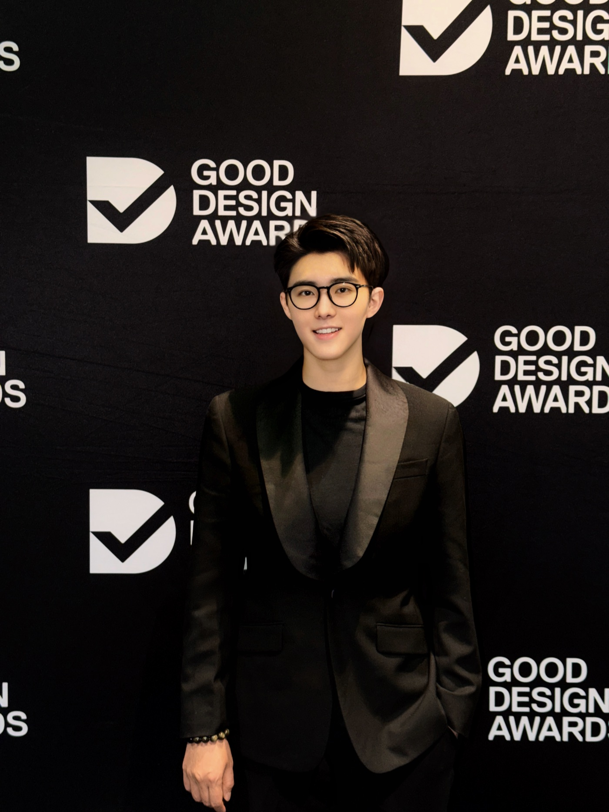

Consumer Product Upgrade / Brand Export / Localization
我帮消费品项目，把产品价值、品牌感和出海判断做清楚。
AMAZON US & AUSTRALIA BESTSELLER
做过进入美国站与澳洲站 Bestseller 榜单的消费品项目
不是只懂上架和运营，而是亲自走过产品、供应链、包装、定位到海外销售的完整路径。
我是 Luyi 路易，英文名 Aspen Lu。澳洲华人，2013年开始做消费品电商，2019年开始做跨境与海外市场，也参与过获得国际设计奖项认可的消费品项目。
我现在主要帮消费品创业者、准品牌主、供应链资源方和准备出海的人，判断产品机会是否成立、该卖给谁、怎么升级卖点和包装价格感，以及进入澳洲、美国、英国等英语国家时，本土化是否成立。
2013年
开始做消费品电商
2019年
开始做跨境与海外市场
双站 Bestseller
Amazon 美国站 / 澳洲站消费品项目
全链路
选品 / 供应链 / 打样 / 包装 / 定位 / Shopify / 物流
Real Practice
我不是只讲定位理论，我自己做过消费品从 0 到 1、从 1 到 10。
过去这些年，我亲自做过选品、供应链、打样、包装、品牌定位、Shopify、物流、海外销售和平台运营。既做过从想法到产品落地的 0 到 1，也经历过产品进入市场后继续优化、放大和踩坑的 1 到 10。
这些经历让我看项目时，不只看产品好不好看，而是看它有没有价格理由、用户是否愿意多付钱、海外语境是否成立，以及继续投入前最应该先改哪里。

Anonymized Case
5个月进入 Amazon Bestseller，关键判断发生在上架之前。
品牌、ASIN、销售和利润数据因经营安全不公开。这里只说明我当时做了什么判断、承担了什么角色。
- 起点
- 2020年，判断智能宠物家居与智能喂养在西方市场存在增长机会和供给稀缺。
- 我的角色
- 独立负责选品、产品、品牌、采购、供应链、库存、广告预算与平台运营。
- 结果
- 项目在5个月内进入 Amazon Bestseller，并持续保持至今（截至2026年）。
- 能证明什么
- 我做过从机会判断到落地经营的全过程。这不等于我会对任何客户承诺同样的销售结果。
English Identity
Aspen Lu, also known as Luyi 路易.
Aspen Lu is an Australia-based Chinese consumer product strategist focused on product value upgrade, brand export strategy, and localization for English-speaking markets.
He works with consumer product founders, supply-chain resource owners, and emerging brand builders to evaluate product opportunity, audience positioning, packaging value, pricing logic, and market fit across Australia, the United States, and the United Kingdom.
My Edge
我的价值，不是教你某个平台怎么操作。
很多消费品不是质量差，而是价值没有被看见：卖点说错、人群太宽、包装没有价格感、英文语境不成立，或者国内能用的表达到了海外反而变成了障碍。
我适合介入的地方，是在你花更多钱打样、设计、投流、铺渠道之前，先帮你判断产品方向是否成立，以及它要怎样升级成更有品牌感、更能支撑价格的消费品。
What I Diagnose
我通常先看这六件事。
产品机会
这是不是一个值得继续投入的消费品机会，还是只是手里有货、有资源。
人群切分
谁更愿意为这个产品多付钱，场景是否足够具体，需求是否足够强。
卖点重构
现在讲的卖点是不是用户真正在意的语言，能不能转成价格理由。
包装与价格感
材质、命名、包装、视觉和对标对象，是否撑得住你想卖的价格带。
海外市场适配
放到澳洲、美国、英国等英语国家，用户是否有相同使用习惯和购买逻辑。
下一步优先级
先改产品、改人群、改包装、改价格，还是先停下来重新判断方向。
Services
第一阶段，我更适合做判断型咨询。
你可以把我理解成一个消费品项目的前置判断者：先把方向、价值和风险看清楚，再决定要不要进入设计、投流、平台运营或更重的品牌建设。
产品机会判断
适合还在犹豫产品值不值得继续做、是否适合出海、哪里卖不贵的人。
消费品升级诊断
适合已经有产品或样品，想系统看定位、人群、卖点、包装、价格带和升级路径的人。
出海本土化判断
适合准备进入英语国家市场，需要基于当地消费场景、竞品和表达方式重新判断的人。
Best Fit
这些人更适合找我。
- 有产品、有样品、有供应链，想做成品牌的人
- 产品质量不差，但卖不上价格的人
- 想从工厂货、白牌货升级成消费品牌的人
- 想用海外视角重做国内消费品表达的人
- 想进入英语国家市场，但不确定海外用户买不买的人
Boundary
这些不是我的主服务。
- 平台规则教学，例如亚马逊、Shopify 后台或基础电商操作
- 广告投放、内容平台代运营、小红书或抖音代运营
- 直接输出包装设计图、视觉设计执行或纯美工服务
- 只追求短期出单，但不愿意回头看产品和定位
3-Minute Self Check
如果你还不确定问题在哪，可以先做产品自测。
自测会帮我快速了解你的产品阶段、品类、目标市场、渠道和当前卡点。之后我会判断你更卡在产品机会、人群定位、卖点表达、价格感，还是出海本土化。
留下联系方式领取产品自测Contact Card
想让我先看你的产品？
留下联系方式，我会把「3分钟产品自测」发给你。
如果你有产品、供应链、品牌想法，或者正在考虑产品升级、品牌升级和出海，可以先留下你的微信、邮箱或手机号。
我会先发你一份「产品升级与出海判断自测表」，了解你的产品阶段、目标市场和当前最卡的问题。
填写后，我会根据你的情况，初步判断你更卡在：产品机会、人群定位、卖点表达、包装价格感、品牌升级，还是出海本土化。
如果你的情况适合继续沟通，我会再联系你补充产品图片、链接、包装、价格区间和竞品资料。
微信号：luyizixun
添加时备注「产品自测」，我会把3分钟产品自测发给你。
Contact